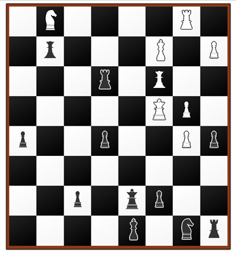
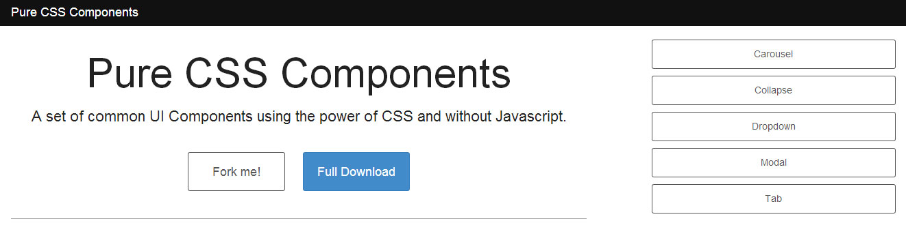
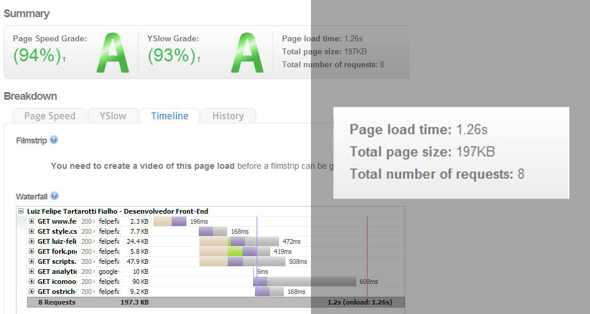
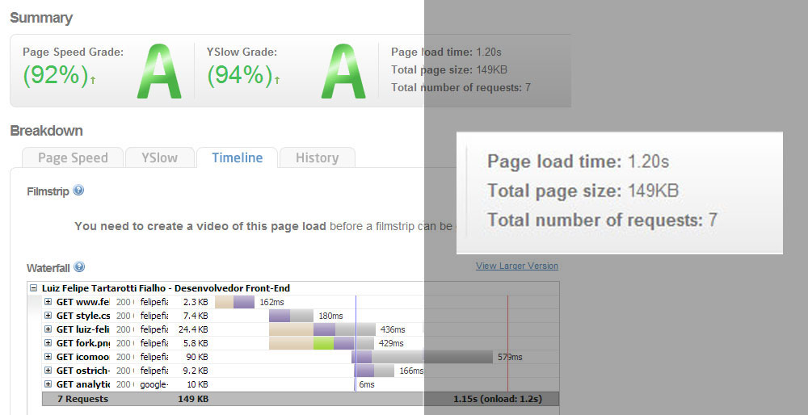

CSSBR - SP
O incrível CSS
Olá amigos!
Sou Luiz Felipe Tartarotti Fialho, tenho 24 anos e trabalho como Desenvolvedor Front-End desde 2009.
- Twitter: @LFeh
- Facebook: https://www.facebook.com/LFehh
- Github: https://github.com/LFeh/
Em 2012...
Um Piano...
(Em parceria com o Thiago Genuino)
Um Xadrez...
(Em parceria com o Thiago Genuino)
E o CSS Components...
É possível utilizar componentes desenvolvidos apenas com CSS?
Antes um pouco sobre código
Todas as interações foram desenvolvidas usando básicamente duas técnicas
:target
n:targetinput[hidden]
< input type"radio/checkbox" hidden />Através dessas técnicas conseguimos fornecer um estado para um elemento alvo. Ou seja, conseguimos trabalhar como eles vão se comportar quando estiverem "ativos".
Sobre o :target
Através do :target conseguimos adicionar interação em um elemento que possui o ID atrelado em algum [href]. Até um tempo atrás isso só era possível com Javascript.
HTML
Example
CSS
.modal {
&:before {
content: "";
display: none;
background: rgba(0,0,0,.6);
position: fixed;
top: 0; left: 0; right: 0; bottom: 0;
z-index: 1001;
}
.modal-dialog {
top: -100%;
.translate(-50%, -500%);
.transition-transform(~"0.3s ease-out");
}
&:target {
&:before {
display: block;
}
.modal-dialog {
.translate(0, 0);
top: 20%;
}
}
}Sobre o input[hidden]
É quase uma "gambiarra" :p
Deixamos um [checkbox] ou [radio] escondido usando [hidden] e trocamos seu status usando um label (sempre fizemos isso nos formulários).
O truque é usar ~ para adicionar interações em elementos irmãos do input.
HTML
...
CSS
.collapse-panel {
display: none;
}
.collapse-open:checked ~ .collapse-panel {
display: block;
}Essas técnicas funcionam no IE9+
Um pouco sobre performance...
Teste em um projeto real
Meu site pessoal...
Antes
Um resultado de teste no GTMetrix antes da alteração.
O que foi feito?
- Removi todo o Javascript do projeto
- Passei a usar o CSS Componentes de Modal e Collapse.
Resultado
Teste final
- Otimizei o carregamento dos ícones e embedei CSS
- Retirei a imagem de "Fork".
Resultado final

Consolidando
Com Javascript
Com CSS Components
Com otimizações de ícones e imagens
Ou seja...
Aconteceu uma pequena melhora de performance ao usar CSS Components, mas ajustes que muitas vezes esquecemos de fazer, como diminuir requisições, podem causar um impacto muito maior na perfomance de um projeto.
É possível utilizar componentes desenvolvidos apenas com CSS?
Obrigado! :D
- Twitter: @LFeh
- Facebook: https://www.facebook.com/LFehh
- Github: https://github.com/LFeh/